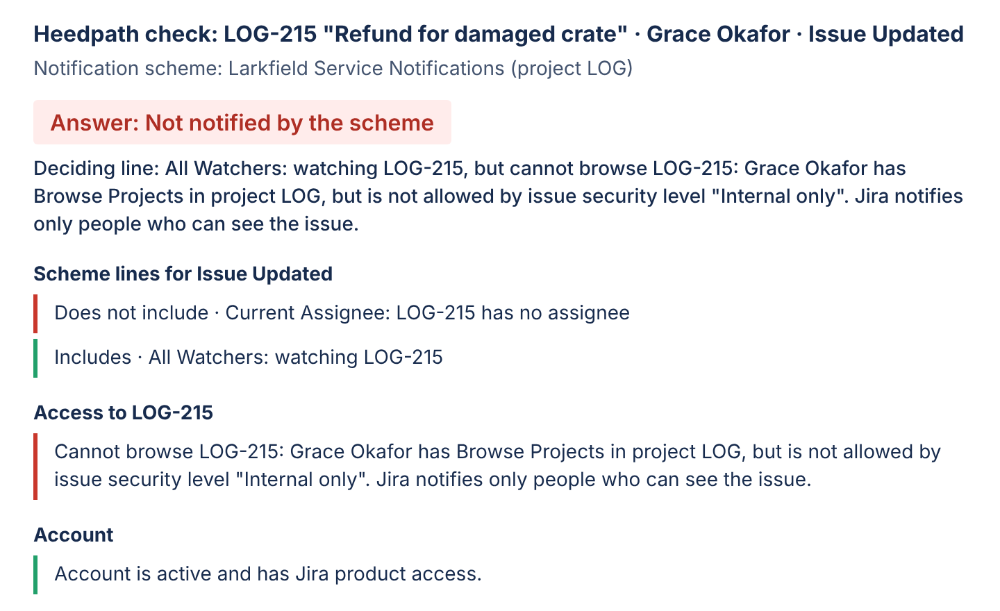
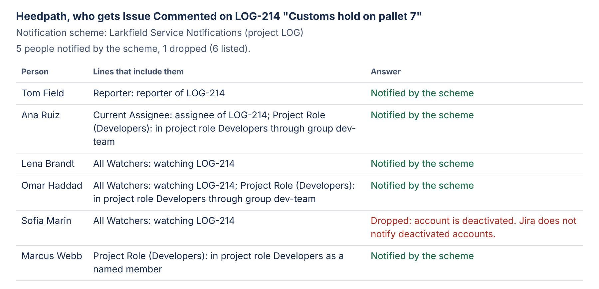

Heedpath quick start
Your first notification check in Jira Cloud, and how to read the answer. Back to the Heedpath product page. The images and the answer text below are real: Heedpath 1.2.1's own screen and its Copy answer text, from the shipped build run outside Jira on the sample company in its test suite. Heedpath has not yet run on a live Jira site, so there are no pictures of it inside Jira yet.
Install
- When the listing is live on the Atlassian Marketplace (it is not yet): in Jira, open Jira settings > Apps > Explore more apps, search for Heedpath, and choose Try it free or Get it now.
- A site admin approves Heedpath's access: 23 read-only Jira permissions (notification schemes, issues, watchers, projects, components, project roles, groups, users and permissions), none that write.
- Open Jira settings > Apps > Heedpath.
Before the listing: early access. Ask for it at support@ochrestack.com; once our first run on a live Jira site has passed, we send a free installation link for “Heedpath Early Access for Jira”. Open it, choose your site and approve the same access. When the listing is live, install the listed app and remove the early-access copy.
You need the Administer Jira global permission. Checking whether another person can browse an issue needs it in Jira, so anyone else gets: “This check needs the Administer Jira global permission, and your account does not have it. Ask a Jira admin to run the check.”
1. Check one person
- Type the issue key, for example
LOG-215, and press Load issue. Heedpath shows the issue's summary, project and notification scheme. Use the key, not the numeric issue ID. - Choose the Person: type a name. For a deactivated account, paste its account ID, because Jira's people search lists active accounts only.
- Choose the Event from the scheme's own list, and press Check.

Reading the answer
This is the whole answer for Grace, as Copy answer gives it:
Heedpath check: LOG-215 "Refund for damaged crate" · Grace Okafor · Issue Updated Notification scheme: Larkfield Service Notifications (project LOG) Answer: Not notified by the scheme Deciding line: All Watchers: watching LOG-215, but cannot browse LOG-215: Grace Okafor has Browse Projects in project LOG, but is not allowed by issue security level "Internal only". Jira notifies only people who can see the issue. Scheme lines for Issue Updated - Does not include · Current Assignee: LOG-215 has no assignee - Includes · All Watchers: watching LOG-215 Access to LOG-215 - Cannot browse LOG-215: Grace Okafor has Browse Projects in project LOG, but is not allowed by issue security level "Internal only". Jira notifies only people who can see the issue. Account - Account is active and has Jira product access. What Heedpath cannot see - The person's own notification settings, which can turn these emails off. Atlassian's route: log in as the user and open their notification settings, as Atlassian recommends since it removed the Notification Helper. - Whether an email reached the person: suppressed, bounced or delivered. Atlassian's route: Atlassian Support can check the email suppression list and clear a suppressed address. - @mention and share emails, which Jira sends outside the notification scheme. Atlassian's route: log in as the user and check their notification settings for mentions. - Jira Service Management customer notifications (emails to portal customers). Heedpath does say when the person has a customer account, because the notification scheme never emails those. Atlassian's route: the service project's Customer notifications settings. - Which event a workflow transition fires. Each transition fires the event named in its "Fire a Generic Event" or "Fire an event" post function, so a resolve transition can fire Generic Event instead of Issue Resolved; Heedpath answers for the event you pick and does not read workflows. Jira's route: Project settings > Workflows, edit the transition and open its Post functions. "Notified by the scheme" means the notification scheme sends this event to the person, they can browse the issue, and their account is active, is not a customer account and has Jira product access. It is not a record of an email. Heedpath checks the configuration as it is now, not as it was when an earlier change happened.
- Answer is one of Notified by the scheme, Not notified by the scheme or Cannot tell.
- Deciding line is the reason in one sentence. When a line includes the person, it is the first such line; when access or the account rules them out, it says so.
- Scheme lines lists every line of the event's row in Jira's own words, with the fact that includes or excludes the person: “watching LOG-214”, “member of group support-eu”, “in project role Developers through group dev-team”.
- Access is Browse Projects, issue security included, because Jira notifies only people who can see the issue.
- Account says whether the account is active, whether it is a Jira Service Management customer account, and whether it has Jira product access. The notification scheme emails neither customers nor accounts without Jira product access, even when they can browse the project; customers' emails come from the service project's Customer notifications.
- For comment events, the answer adds that a comment restricted to a role or group is emailed only to the people in it.
Copy answer copies all of it as plain text for the ticket. If the browser blocks the clipboard, Heedpath shows the text in a box to select and copy.
Change made by (optional)
Only the Current User line needs it: that line includes only the person who makes the change. Fill in Change made by to check it. Without it, an answer that depends on that line is Cannot tell, unless the person cannot browse the issue or has an account Jira never emails: then the answer is Not notified by the scheme, whoever makes the change.
2. All events
With an issue and a person chosen, press All events. Every event of the project's notification scheme is listed in the scheme's order, each with its answer and deciding line, so you see what the person will and will not hear about on that issue. The table can be copied as text too.
3. Who gets this
With an issue and an event chosen, press Who gets this. Heedpath lists the people first, each once with every line that includes them, then checks each person's account and access to the issue, 40 people per step, and fills in the last column; progress is shown. People are marked as dropped, with the reason, when they cannot browse the issue, their account is deactivated, it is a customer account, or it has no Jira product access. Groups over 1,000 members are shown by count, with a Show members button.

4. From the issue
Open an issue, open its ••• menu and choose Check notifications. The same check opens with the issue filled in. The menu item is shown to Jira admins only.
When the answer is Cannot tell
Heedpath does not guess. When Jira does not return something the answer depends on, the answer is Cannot tell, and it names the reason. The usual ones:
- the project is team-managed, so it has no notification scheme;
- Jira did not return the project's notification scheme, or the person's product access;
- the only line that could include the person is Current User, Change made by is empty, and the person can browse the issue;
- your own account cannot see the issue's watchers (View Voters and Watchers), so the All Watchers line cannot be read, and the person can browse the issue.
What Heedpath cannot see
Every answer ends with this block; each item names where to check instead. It is in full in the answer above. In short: the person's own notification settings, whether an email was delivered, @mention and share emails, Jira Service Management customer notifications, and which event a workflow transition fires.
Other limits
- Configuration, not deliveries. “Notified by the scheme” is not a record of an email.
- Now, not then. Heedpath reads the scheme, groups, roles, watchers and fields as they are when you run the check.
- Single Email Address lines: Atlassian stopped sending to them in Jira Cloud in 2023; Heedpath shows them with that note.
- Large lists take a while: Who gets this checks 40 people per step.
- Jira Cloud only, company-managed projects, English only. Not for Jira Data Center.
Privacy
Heedpath runs on Atlassian's Forge platform and declares no external hosts, so it has nowhere outside Atlassian to send data. It reads Jira only when a Jira admin runs a check, as that admin, and stores nothing about people or issues. No analytics, no telemetry. See the privacy policy.
Support
Email support@ochrestack.com with the answer you copied. We answer every message.